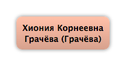

Домой
Домой
 Люди
Люди
 Семьи
Семьи
 Источники
Источники
 Диаграммы
Диаграммы
 Статистика
Статистика
Хиония Корнеевна Грачёва

Контекст

Дополнительные имена
| Тип | Имя |
|---|---|
| Фамилия в браке | Грачёва |
Родители
| Отец | Дата рождения | Мать | Дата рождения |
|---|
Родители и дети
| Партнёры | Дата рождения | Дети |
|---|---|---|
|
Мария Павловна Грачёва
|
События
Факты
Медиа
Примечание
Источники
Родство
| Имя | Степень родства | Дата рождения | Место рождения | Дата смерти | Место смерти |
|---|---|---|---|---|---|
| Дети | |||||
| Дочь | 1875 | Москва, Россия | |||
| Внуки | |||||
| Внучка | 23.10.1899 | Москва, Россия | |||
| Внук | 21.07.1900 | Москва, Россия | 1947 | ||
| Внучка | 22.09.1902 | Тифлис (Тбилиси), Грузия | |||
| Внучка | 03.12.1905 | Москва, Россия | |||
| Внучка | 10.04.1907 | Двинск, Россия | |||
| Правнуки | |||||
| Правнук | |||||
| Правнучка | |||||
| Правнук | |||||
| Правнучка | |||||
| Правнучка | |||||
| Правнук | 22.08.1926 | Хабаровск, СССР | 08.05.2006 | Санкт-Петербург, Россия | |
| Пра-правнуки | |||||
| Пра-правнук | |||||
| Пра-правнук | |||||
| Пра-правнучка | 19.03.1963 | Ленинград, СССР | |||
| Пра-правнук | 22.02.1965 | Ленинград, СССР | |||
| Пра-пра-правнуки | |||||
| Пра-пра-правнук | 01.09.1988 | Ленинград, СССР | |||
| Пра-пра-правнук | 19.11.1991 | Санкт-Петербург, Россия | |||
| Пра-пра-правнук | 15.07.1995 | Санкт-Петербург, Россия | |||
| Жёны сыновей (мужья дочерей) | |||||
| Зять | 23.09.1880 | ||||